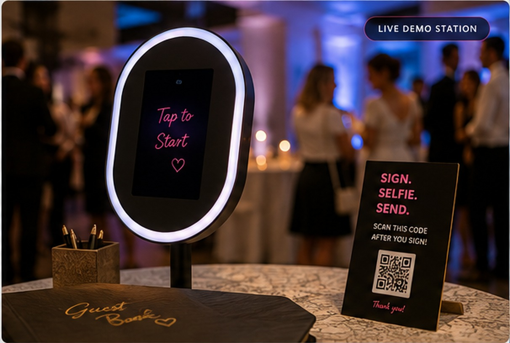
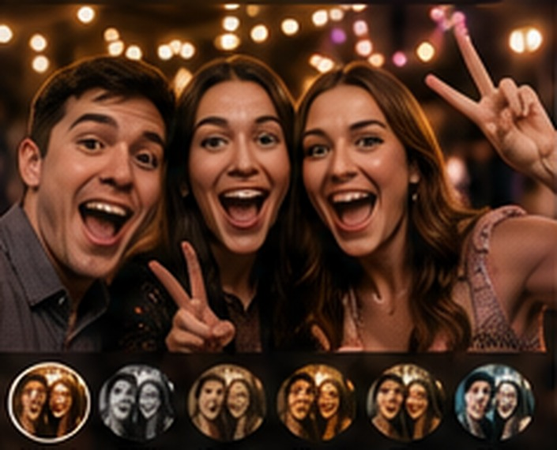
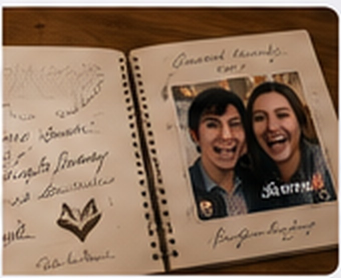

1
Sign
Write on the card, page or signature line with the unique QR beside it.
Every signature spot has its own QR. Guests sign, scan, take a selfie and send it. You keep the original handwriting, their photos and the story behind both.

The guest does not create an account, install an app or figure out where their photo belongs. The QR already knows.
Write on the card, page or signature line with the unique QR beside it.

Scan, take a selfie, retake as much as you want and save up to three favorites.

Send the photos. If it is a loose card, drop the signed card in the collection box so the original ink comes home too.
Every physical option uses the same unique QR-slot system underneath.
Large boxes or clean signature lines. Print a stack, leave them loose, or add them to a binder.
Open Print Studio →Business-card, deck-card and 4×6 sizes. Guests sign, scan, then return the physical card.
See card sizes →Already bought a guest book? Add a numbered QR sticker beside each signing space and keep the book you love.
See QR stickers →A finished book with QR signing spots already designed into every page.
See the guest book →Run the same event in kiosk mode on a tablet. Guests can take a guest-book selfie or just take a fun event photo.
If they opt in, the finished event-album link can be texted later when the host publishes it.
Show approved guest-book selfies and event uploads on a TV or projector as they come in.
Preview the live wallThe original cards, sheets or book pages are your source of truth. Scan them after the event, then approve everything before it reaches the finished keepsake.
Yes. Always. The QR links the selfie to the card number, but the physical signed card is still collected so you keep the original handwriting and can scan it cleanly after the event.
Yes. Retakes are unlimited before sending. The event owner can allow one, two or three saved photos and choose the book photo later.
It is one separate QR that anyone can scan to upload event photos. Those photos go to the event album and live wall, but are not treated as signature entries.
The event owner can move or swap selfies and signatures in the review workspace before building the book.
No. Guests can use their own phones for everything. Kiosk mode is an optional add-on for a photo-booth-style experience.